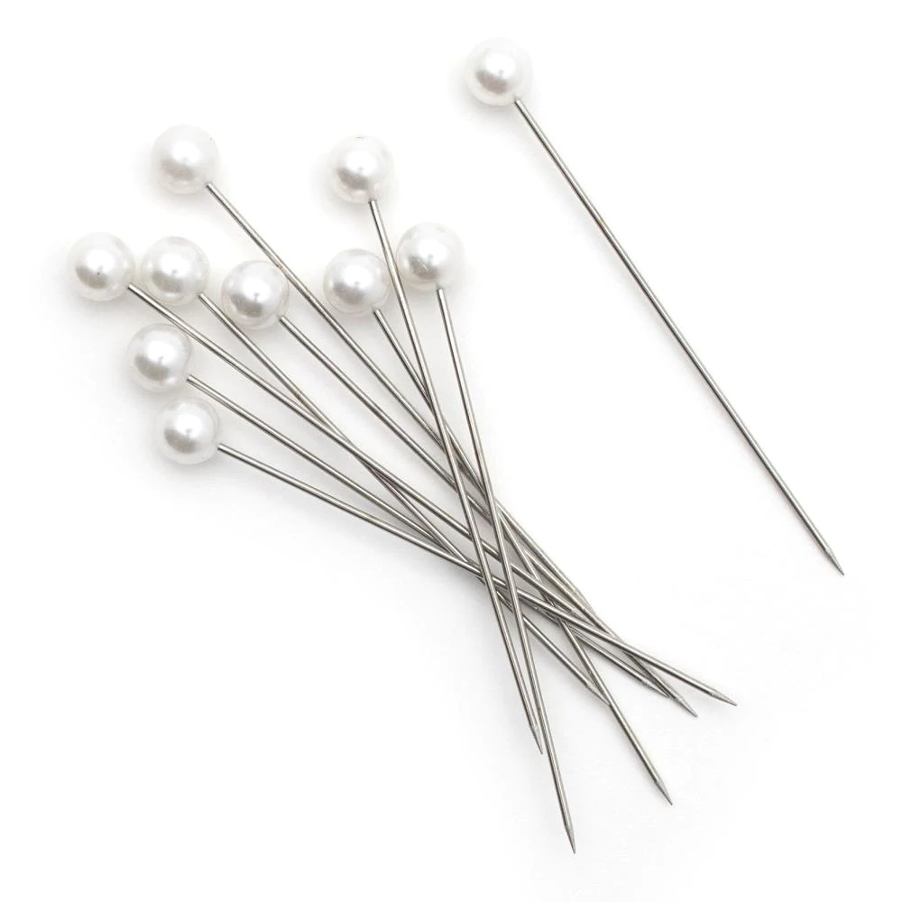

1
Tape Measure
With a tape measure, you create picture-perfect clothes that fit your clients. Instead of this tool, some designers use a grading ruler and a set square to achieve the same outcomes. You’ll find the two handy if you aren’t good at using a tape measure.
2
Scissors
Scissors is used to cut fabric for sample garments. It is used to make pattern set and to cut rolled during fabric spreading. They are intended to smoothly cut various types of fabric in straight, long, and curves. Not only cutting fabrics, but also these sewing scissors help to give accurate measurements of seam allowance, darts and tucks position.

3
Tailor’s Chalk
Tailor's chalk is a type of chalk that is designed to make temporary markings on cloth. Using this chalk, a tailor can make markings where fabric needs to be cut or garments need to be altered, and the chalk can also be used to mark out cutting, hemming, and darting lines on garments as they are constructed.
4
Dressmaker dummy
The dummies give you an idea of how the dress you’re making will look at the real person upon wearing it. With the dressmaker dummy, you take less time working on body parts that don’t fit, thereby saving you time.
5
Pearl headpins
Pre-sewing before actual sewing offers you an idea of how the finished dress will appear. It is critical to ensure that your seams appear great on the finished garment. Here's when the pearl head pins come in handy. When trying to fit the fabric into a perfect size, the pins allow you to sink them into the dummy. Furthermore, the pins are simple to grasp and utilize.
6
Sewing Machine
A sewing machine helps you sew heavy duty fabric like denim and leather. Heavy fabric like denim and wool can't be sewn by hand. A sewing machine makes the task of sewing heavy fabric an easy one. This is important if you have a sewing business because accuracy and timeliness are very important.